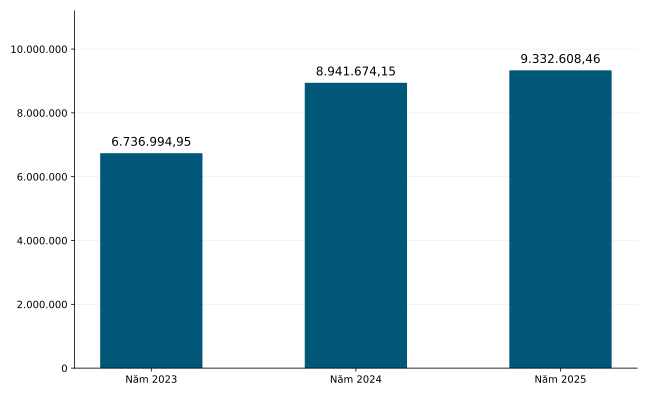
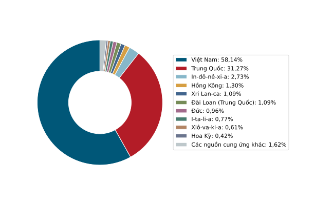
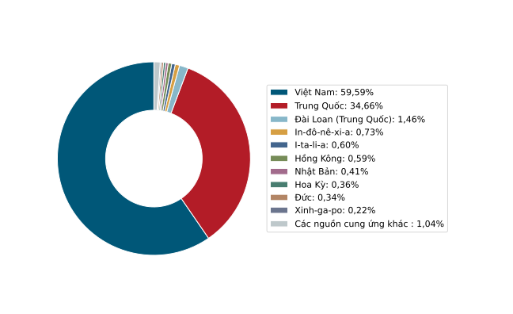
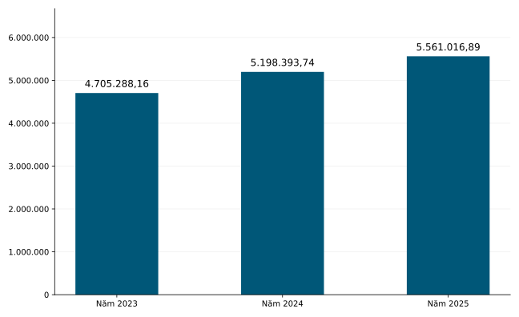
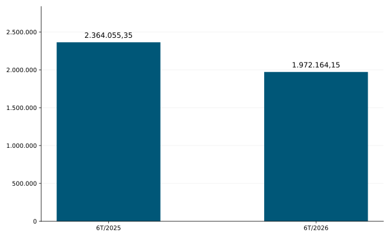

Đài Loan khởi xướng điều tra chống bán phá giá đối với thép không gỉ cán nguội nhập khẩu từ Việt Nam
Ngày 14 tháng 8 năm 2026, Cơ quan quản lý Tài chính Đài Loan (MOF) ban hành Thông báo khởi xướng điều tra chống bán phá giá (CBPG) đối với một số sản phẩm thép không gỉ cán nguội dạng phẳng nhập khẩu từ Việt Nam, trên cơ sở đơn yêu cầu của Công ty Cổ phần Thép Yieh United và Công ty Cổ phần Nhà máy Cơ khí Tang Eng.
Sản phẩm bị điều tra là thép không gỉ cán nguội dạng phẳng, dạng cuộn hoặc không cuộn, có độ dày từ 0,05 mm đến 6,10 mm, với thành phần niken từ 5% đến 20%, crôm từ 15% đến 25%, mangan không quá 3% và nhôm không quá 0,5%. Sản phẩm có bề mặt được phủ, mạ hoặc bọc kim loại không thuộc phạm vi điều tra. Sản phẩm chủ yếu được sử dụng trong sản xuất đồ dùng nhà bếp, thiết bị gia dụng, xây dựng, hàng không vũ trụ, hóa dầu, cơ khí và giao thông vận tải. Các mã HS liên quan được nêu cụ thể trong Thông báo khởi xướng; tuy nhiên, mã HS chỉ mang tính tham khảo và phạm vi sản phẩm được xác định theo mô tả hàng hóa.
Thời kỳ điều tra CBPG từ ngày 01 tháng 7 năm 2025 đến ngày 30 tháng 6 năm 2026. Theo đơn yêu cầu, biên độ phá giá bị cáo buộc đối với hàng hóa của Việt Nam là 31,36% trong năm 2025. Đây là mức cáo buộc của nguyên đơn và chưa phải kết luận của cơ quan điều tra.
Theo quy trình điều tra của Đài Loan, MOF đã chuyển vụ việc cho Cơ quan quản lý Kinh tế Đài Loan (MOEA) điều tra thiệt hại đối với ngành sản xuất trong nước. MOEA có 40 ngày để đưa ra kết luận sơ bộ về thiệt hại; nếu xác định có thiệt hại, MOF sẽ tiến hành xác định sơ bộ về bán phá giá trong vòng 70 ngày để xem xét áp dụng thuế CBPG tạm thời. Nguyên đơn cũng đề nghị truy thu thuế CBPG đối với hàng hóa nhập khẩu trong 90 ngày trước thời điểm áp dụng thuế tạm thời nhằm hạn chế khả năng gia tăng nhập khẩu trong thời gian điều tra.
Theo thông báo, có 20 doanh nghiệp sản xuất, xuất khẩu Việt Nam thuộc diện được xác định. Các doanh nghiệp liên quan phải đăng ký tham gia vụ việc trong vòng 20 ngày kể từ ngày công bố thông báo. Doanh nghiệp hợp tác đầy đủ có thể được xem xét áp dụng mức thuế riêng; trường hợp không đăng ký hoặc không hợp tác có thể bị xác định biên độ phá giá dựa trên thông tin sẵn có bất lợi.
Cục Phòng vệ thương mại khuyến nghị các doanh nghiệp liên quan chủ động xác định hàng hóa có thuộc phạm vi điều tra, đăng ký tham gia đúng thời hạn, rà soát và chuẩn bị đầy đủ hồ sơ, số liệu về sản xuất, bán hàng, chi phí và xuất khẩu; đồng thời phối hợp đầy đủ, kịp thời với cơ quan điều tra Đài Loan để bảo vệ quyền và lợi ích hợp pháp, hạn chế nguy cơ bị áp dụng mức thuế bất lợi.
Doanh nghiệp có thể tra cứu Thông báo khởi xướng, bản công khai đơn yêu cầu và các mẫu đơn đăng ký tham gia vụ việc trên trang thông tin của Cơ quan Hải quan, Cơ quan quản lý Tài chính Đài Loan. Cục Phòng vệ thương mại sẽ tiếp tục theo dõi và cập nhật diễn biến vụ việc.
TIN TRONG NƯỚC
Cục Phòng vệ thương mại thông báo về việc tiếp nhận hồ sơ yêu cầu rà soát biện pháp chống bán phá giá đối với một số sản phẩm thép hợp kim hoặc không hợp kim được cán phẳng, được sơn xuất xứ từ Đại Hàn Dân quốc và Cộng hòa nhân dân Trung Hoa
Ngày 24 tháng 10 năm 2024, Bộ Công Thương ban hành Quyết định số 2822/QĐ-BCT về kết quả rà soát cuối kỳ việc áp dụng biện pháp chống bán phá giá đối với một số sản phẩm thép hợp kim hoặc không hợp kim được cán phẳng, được sơn có xuất xứ từ Đại Hàn Dân quốc và Cộng hòa nhân dân Trung Hoa (mã vụ việc AD04).
Căn cứ Điều 51 Nghị định số 86/2025/NĐ-CP, Cục Phòng vệ thương mại (Cơ quan điều tra) thông báo tiếp nhận hồ sơ yêu cầu rà soát của các bên liên quan đối với việc áp dụng thuế chống bán phá giá đối với các sản phẩm nêu trên. Thông báo chi tiết được đăng tải tại đây.
Theo quy định tại Điều 56 Nghị định số 86/2025/NĐ-CP, các bên liên quan có quyền nộp hồ sơ yêu cầu rà soát. Hồ sơ phải bảo đảm đầy đủ các thông tin, tài liệu theo quy định tại khoản 1 Điều 57 Nghị định số 86/2025/NĐ-CP.
Thời hạn tiếp nhận hồ sơ yêu cầu rà soát: chậm nhất ngày 21 tháng 9 năm 2026.
Cục Phòng vệ thương mại đề nghị các bên liên quan nghiên cứu kỹ các quy định và hướng dẫn tại Thông báo để thực hiện việc nộp hồ sơ đúng thời hạn, đầy đủ theo quy định.
TIN TRONG NƯỚC
Cục Phòng vệ thương mại ban hành Bản câu hỏi điều tra cho nhà sản xuất trong nước và nhà nhập khẩu – Vụ việc điều tra áp dụng biện pháp chống bán phá giá đối với một số sản phẩm thanh thép dự ứng lực có xuất xứ từ Cộng hòa nhân dân Trung Hoa (Mã vụ việc: AD24)
Ngày 27 tháng 7 năm 2026, Bộ trưởng Bộ Công Thương ban hành Quyết định số 1903/QĐ-BCT về việc điều tra áp dụng biện pháp chống bán phá giá đối với một số sản phẩm thanh thép dự ứng lực có xuất xứ từ Cộng hòa nhân dân Trung Hoa (mã vụ việc AD24).
Để thu thập thông tin, số liệu phục vụ điều tra, Cơ quan điều tra đã ban hành Bản câu hỏi điều tra dành cho nhà sản xuất trong nước và nhà nhập khẩu. Bản câu hỏi được đăng tải trên Hệ thống tiếp nhận Hồ sơ PVTM (online.trav.gov.vn), Cổng thông tin điện tử của Cục Phòng vệ thương mại (pvtm.gov.vn) và Bộ Công Thương (moit.gov.vn).
Thời hạn nộp Bản trả lời câu hỏi là trước 17h00 ngày 14 tháng 9 năm 2026 (giờ Hà Nội). Doanh nghiệp thực hiện nộp trực tuyến thông qua Hệ thống tiếp nhận Hồ sơ PVTM tại online.trav.gov.vn. Hướng dẫn chi tiết về cách thức, hồ sơ và yêu cầu nộp được quy định tại Phụ lục 3 và các tài liệu kèm theo Bản câu hỏi.
Cục Phòng vệ thương mại đề nghị các nhà sản xuất trong nước và nhà nhập khẩu có liên quan tham gia trả lời Bản câu hỏi và hợp tác đầy đủ trong suốt quá trình điều tra. Thông tin do doanh nghiệp cung cấp là cơ sở để Cơ quan điều tra xem xét, đánh giá và đưa ra kết luận vụ việc. Trường hợp không nộp đúng hạn hoặc cung cấp thông tin không đầy đủ, không chính xác theo yêu cầu, doanh nghiệp có thể bị áp dụng quy định tại Điều 9 Nghị định số 86/2025/NĐ-CP về bên liên quan không hợp tác trong vụ việc phòng vệ thương mại.
Đối với nhà nhập khẩu hàng hóa bị điều tra, bên cạnh việc trả lời Bản câu hỏi, doanh nghiệp cần chủ động thông báo cho các nhà sản xuất, xuất khẩu nước ngoài có liên quan để các doanh nghiệp này thực hiện trả lời Bản câu hỏi dành cho nhà sản xuất, xuất khẩu nước ngoài, qua đó bảo đảm quyền và lợi ích hợp pháp trong quá trình điều tra.
Cục Phòng vệ thương mại lưu ý doanh nghiệp nghiên cứu kỹ hướng dẫn về nội dung, số lượng, hình thức và thời hạn nộp được quy định trong Bản câu hỏi, đồng thời bảo đảm nộp đầy đủ thông tin theo đúng thời hạn.
TIN NƯỚC NGOÀI
Hoa Kỳ ban hành kết luận cuối cùng đối với sản phẩm L-lysine nhập khẩu từ Trung Quốc
Ngày 18 tháng 8 năm 2026, Ủy ban Thương mại Quốc tế Hoa Kỳ (USITC) đã ban hành kết luận cuối cùng khẳng định sản phẩm L-lysine nhập khẩu từ Trung Quốc bị bán phá giá và được trợ cấp, gây thiệt hại đáng kể cho ngành sản xuất trong nước của Hoa Kỳ.
Theo quy định của Hoa Kỳ, sau khi USITC đưa ra kết luận khẳng định về thiệt hại, Bộ Thương mại Hoa Kỳ (USDOC) sẽ ban hành lệnh áp thuế chống bán phá giá (CBPG) và chống trợ cấp (CTC) đối với sản phẩm thuộc phạm vi vụ việc. Sản phẩm điều tra được phân loại theo mã HS 2922.41.0090. L-lysine là một loại axit amin được sử dụng phổ biến trong sản xuất thức ăn chăn nuôi, thực phẩm và một số sản phẩm dược phẩm.
Diễn biến vụ việc
- Ngày 18/6/2025: USDOC khởi xướng điều tra CBPG và CTC đối với L-lysine có xuất xứ từ Trung Quốc.
- Ngày 16/1/2026: USDOC ban hành kết luận sơ bộ trong vụ việc điều tra CTC.
- Ngày 3/3/2026: USDOC ban hành kết luận sơ bộ trong vụ việc điều tra CBPG.
- Ngày 21/7/2026: USDOC ban hành kết luận cuối cùng về CBPG và CTC.
- Ngày 18/8/2026: USITC ban hành kết luận cuối cùng khẳng định thiệt hại đối với ngành sản xuất trong nước Hoa Kỳ.
Sau khi các lệnh áp thuế được ban hành, sản phẩm L-lysine của Trung Quốc xuất khẩu sang Hoa Kỳ có thể phải chịu đồng thời thuế CBPG và CTC, qua đó tác động đến hoạt động xuất khẩu của các doanh nghiệp liên quan.
Tổng hợp từ News.chemnet.com
TIN NƯỚC NGOÀI
Nghiên cứu của BFTI: Băng-la-đét đối mặt với nhiều biện pháp chống bán phá giá hơn số biện pháp nước này áp dụng
Băng-la-đét hầu như chưa sử dụng ba công cụ phòng vệ thương mại gồm chống bán phá giá, chống trợ cấp và tự vệ đối với hàng hóa nhập khẩu không công bằng, trong khi nước này thường xuyên trở thành đối tượng áp dụng các biện pháp phòng vệ thương mại tại thị trường nước ngoài, theo một nghiên cứu của Viện Ngoại thương Băng-la-đét (BFTI).
Các kết quả nghiên cứu được đưa ra trong bối cảnh Tổng cục Phòng vệ thương mại Ấn Độ (DGTR) đang tiến hành điều tra chống bán phá giá đối với sản phẩm màng polyetylen terephtalat (PET) xuất khẩu từ Băng-la-đét, Trung Quốc và Thái Lan, đồng thời đề nghị các bên liên quan tham gia phiên điều trần công khai.
Các nhà sản xuất không được nêu tên riêng trong kết luận rà soát sẽ phải chịu mức thuế còn lại 445 USD/tấn đối với sợi và dây đay và 283 USD/tấn đối với bao tải.
Ấn Độ cũng đã hoàn tất rà soát giữa kỳ đối với thuế chống bán phá giá áp dụng đối với các sản phẩm đay nhập khẩu từ Băng-la-đét và Nê-pan.
Trong kết luận cuối cùng ngày 25 tháng 6, cơ quan chức năng Ấn Độ đã đề xuất cơ cấu thuế mới theo từng nhà sản xuất, thay thế mức thuế hiện hành từ 0 đến 351,72 USD/tấn được áp dụng kể từ khi biện pháp được áp dụng trở lại vào tháng 12 năm 2022.
Theo cơ cấu mới được đề xuất, phần lớn các nhà sản xuất Băng-la-đét được xác định cụ thể sẽ chịu mức thuế 69 USD/tấn đối với sợi và dây đay và 120 USD/tấn đối với bao tải.
Các nhà sản xuất không được nêu tên cụ thể sẽ chịu mức thuế còn lại 445 USD/tấn đối với sợi và dây đay và 283 USD/tấn đối với bao tải.
Các mức thuế được đề xuất sẽ có hiệu lực sau khi được Bộ Tài chính Ấn Độ thực hiện thông qua thông báo của cơ quan hải quan.
Theo nghiên cứu của BFTI, hiện có 04 sản phẩm xuất khẩu khác của Băng-la-đét đang chịu thuế chống bán phá giá tại các thị trường nước ngoài, với mỗi sản phẩm bị một quốc gia khác nhau áp dụng biện pháp.
Pa-ki-xtan áp dụng mức thuế 12,14% đối với hydrogen peroxide nhập khẩu từ phần lớn các nhà xuất khẩu Băng-la-đét, trong khi một số doanh nghiệp được xác định cụ thể được áp dụng mức thuế thấp hơn, sau khi hoàn tất rà soát vào tháng 10 năm 2021.
Thổ Nhĩ Kỳ áp dụng mức thuế 0,80 USD/kg đối với sợi staple tổng hợp và nhân tạo, sau khi điều tra xác định có hành vi lẩn tránh biện pháp hiện hành; một doanh nghiệp Băng-la-đét được miễn áp dụng biện pháp.
Ác-hen-ti-na áp dụng mức thuế 42% đối với găng tay làm từ 100% vật liệu dệt kim, được áp dụng từ tháng 2 năm 2021. Bra-xin áp dụng mức thuế 0,16 USD/kg đối với bao và túi đay, biện pháp được áp dụng từ năm 1992 và được rà soát gần nhất vào tháng 9 năm 2021.
Bảng Các nước áp dụng thuế chống bán phá giá đối với Băng-la-đét
Sản phẩm
Quốc gia áp dụng
Lần đầu áp dụng biện pháp
Lần áp dụng biện pháp gần nhất
Mức thuế CBPG
Bao và túi đay
Bra-xin
1992
Tháng 9/2021
0,16 USD/kg
Hydrogen peroxide
Pa-ki-xtan
Tháng 3/2016
Chấm dứt
—
Sản phẩm đay
Ấn Độ
Tháng 1/2017
Tháng 12/2022
0 – 351,72 USD/tấn
Sợi tổng hợp nhân tạo
Thổ Nhĩ Kỳ
Tháng 10/2018
Điều tra lẩn tránh biện pháp
0,80 USD/kg
Găng tay 100% vật liệu dệt kim
Ác-hen-ti-na
Tháng 2/2021
—
42%
Nguồn: BFTI
Theo nghiên cứu của BFTI, kể từ năm 1992, các nhà xuất khẩu Băng-la-đét đã phải đối mặt với gần 10 vụ điều tra chống bán phá giá do các quốc gia nêu trên tiến hành.
Nghiên cứu được thực hiện cho Ủy ban Thương mại và Thuế quan Băng-la-đét (BTTC) cho rằng nước này đang đứng trước một thời điểm quan trọng khi chuẩn bị thoát khỏi nhóm nước chậm tăng trưởng (LDC) vào tháng 11 năm nay. Sau khi thoát khỏi LDC, Băng-la-đét sẽ mất quyền tiếp cận miễn thuế và ưu đãi tại các thị trường cũng như một số biện pháp hỗ trợ thương mại dành cho các nước LDC.
Nghiên cứu nhận định, quá trình chuyển đổi này sẽ mở rộng cơ hội tiếp cận thị trường nhưng đồng thời thu hẹp dư địa chính sách đối với các biện pháp bảo hộ truyền thống như thuế bổ sung, thuế phụ thu và mức giá tối thiểu tính thuế.
Trong bối cảnh mới, các công cụ phòng vệ thương mại phù hợp với quy định của WTO, bao gồm chống bán phá giá, chống trợ cấp và tự vệ, sẽ trở nên cần thiết nhằm vừa bảo vệ ngành sản xuất trong nước trước các hành vi thương mại không công bằng, vừa hỗ trợ các nhà xuất khẩu Băng-la-đét khi đối mặt với các vụ điều tra tại nước ngoài.
BFTI khuyến nghị việc thoát khỏi quy chế LDC dự kiến sẽ khiến các ngành sản xuất trong nước phải đối mặt với sự cạnh tranh gia tăng, bao gồm nguy cơ hàng hóa bị bán phá giá, hàng hóa được trợ cấp và sự gia tăng đột biến của hàng nhập khẩu. Theo đó, mức thuế nhập khẩu sẽ giảm khi Băng-la-đét thực hiện các nghĩa vụ theo các hiệp định thương mại song phương và đa phương.
Tổng hợp từ Thedailystar.net
TIN NƯỚC NGOÀI
In-đô-nê-xi-a khởi xướng điều tra chống bán phá giá đối với hạt SAP có xuất xứ từ Trung Quốc
Ngày 14 tháng 8 năm 2026, Ủy ban Chống bán phá giá In-đô-nê-xi-a chính thức ban hành thông báo khởi xướng điều tra chống bán phá giá đối với hạt SAP (Super Absorbent Polymers) được sản xuất tại Trung Quốc, đánh dấu một vụ việc phòng vệ thương mại mới đối với hoạt động xuất khẩu hạt SAP của Trung Quốc sang thị trường Đông Nam Á. Số thông báo của vụ việc là 02/546/KADI/08/2026.
Phạm vi điều tra
Vụ việc được chính thức khởi xướng trên cơ sở đơn yêu cầu của doanh nghiệp In-đô-nê-xi-a PT. Nippon Shokubai Indonesia.
Sản phẩm bị điều tra là hạt SAP (Super Absorbent Polymer), thuộc nhóm vật liệu hóa chất mới quan trọng. Sản phẩm được sử dụng rộng rãi trong các lĩnh vực như sản phẩm vệ sinh và chăm sóc, vật tư y tế, giữ nước trong nông nghiệp, ngăn nước cho cáp điện, chống thấm trong xây dựng và bao bì chuỗi lạnh. Đây là loại vật liệu polymer thiết yếu trong cả lĩnh vực dân sinh và công nghiệp. Sản phẩm thuộc các mã HS: 3906.90.92 và 3906.90.99.
Thông tin chính thức về Cơ quan điều tra
Vụ việc được Ủy ban Chống bán phá giá In-đô-nê-xi-a (Komite Anti Dumping Indonesia) trực tiếp tiến hành điều tra và xử lý. Thông tin liên hệ chính thức như sau:
- Địa chỉ: JL.M.I. RIDWAN RAIS NO.5, JAKARTA 10110
Hạt SAP (Super Absorbent Polymer) là một trong những sản phẩm hóa chất tinh chế có năng lực cạnh tranh xuất khẩu của Trung Quốc, với năng lực sản xuất trong nước và quy mô xuất khẩu thuộc nhóm hàng đầu thế giới. Đông Nam Á là một trong những thị trường xuất khẩu trọng điểm của sản phẩm này.
Việc In-đô-nê-xi-a khởi xướng vụ việc điều tra chống bán phá giá có thể ảnh hưởng đến đơn hàng xuất khẩu, chi phí thông quan và thị phần của các doanh nghiệp sản xuất hạt SAP trong khu vực. Trong quá trình điều tra, vụ việc có thể dẫn đến những tác động như điều chỉnh mức thuế và hạn chế xuất khẩu. Các doanh nghiệp sản xuất và kinh doanh xuất nhập khẩu liên quan cần theo dõi chặt chẽ diễn biến vụ việc, đồng thời chủ động xây dựng phương án thị trường và ứng phó rủi ro.
Tổng hợp từ News.chemnet.com
TIN NƯỚC NGOÀI
Úc chấm dứt điều tra chống trợ cấp đối với một doanh nghiệp Trung Quốc xuất khẩu thép định hình
Cơ quan Chống bán phá giá Úc (ADC) đã quyết định chấm dứt điều tra chống trợ cấp đối với Công ty Wenan Kaize Building Material Co., Ltd. của Trung Quốc liên quan đến sản phẩm thép thanh và thanh ray định hình thành mỏng, các sản phẩm thuộc phạm vi điều tra được phân loại theo các mã HS: 7216.61.00.57, 7216.69.00.58, 7308.90.00.52, 7308.90.00.53, 7308.90.00.55 và 7308.90.00.56. Tuy nhiên, ADC sẽ tiếp tục điều tra chống bán phá giá đối với các nhà xuất khẩu Trung Quốc và điều tra chống trợ cấp đối với các doanh nghiệp khác thuộc phạm vi vụ việc.
Theo Thông báo số 2026/108 của ADC, cơ quan điều tra xác định mức trợ cấp mà Công ty Wenan Kaize Building Material Co., Ltd. nhận được trong thời kỳ điều tra ở mức không đáng kể. Trên cơ sở đó, ADC quyết định chấm dứt điều tra chống trợ cấp đối với doanh nghiệp này.
Đối với các doanh nghiệp còn lại, ADC sẽ tiếp tục điều tra chống bán phá giá đối với các nhà xuất khẩu Trung Quốc thuộc phạm vi vụ việc, đồng thời tiếp tục điều tra chống trợ cấp đối với các doanh nghiệp không hợp tác và các nhà xuất khẩu khác.
Vụ việc được ADC khởi xướng ngày 30/6/2025, trên cơ sở đơn yêu cầu của Công ty Rondo Building Services Pty Ltd. của Úc, để điều tra chống bán phá giá và chống trợ cấp đối với sản phẩm thép thanh và thanh ray định hình thành mỏng nhập khẩu từ Trung Quốc. Thời kỳ điều tra bán phá giá và trợ cấp từ 01/4/2024 đến 31/3/2025, trong khi thời kỳ điều tra thiệt hại đối với ngành sản xuất trong nước từ 01/4/2021.
Ngày 25/5/2026, ADC áp dụng biện pháp chống bán phá giá tạm thời dưới hình thức ký quỹ/bảo đảm, có hiệu lực từ ngày 26/5/2026. Mức thuế chống bán phá giá tạm thời được xác định ở mức 37,8% đối với Công ty Wenan Kaize Building Material Co., Ltd. và các nhà xuất khẩu Trung Quốc khác. Tại thời điểm đó, ADC xác định chưa có đủ bằng chứng để đưa ra kết luận sơ bộ khẳng định về hành vi trợ cấp, đồng thời tiếp tục điều tra chống trợ cấp.
Mức thuế chống bán phá giá tạm thời 37,8% tiếp tục được áp dụng trong thời gian vụ việc được xử lý và chờ ADC ban hành kết luận cuối cùng.
Tổng hợp từ mysteel.net
TIN NƯỚC NGOÀI
Không đạt thỏa thuận Hoa Kỳ áp dụng thuế 50% đối với hàng hóa nhập khẩu từ Ca-na-đa
Hoa Kỳ đã áp dụng mức thuế 50% đối với khoảng 20 tỷ USD hàng hóa nhập khẩu từ Ca-na-đa, sau khi các cuộc đàm phán thương mại giữa hai nước không đạt được thỏa thuận. Hai bên đã tiến hành đàm phán trong 03 ngày tại Washington nhưng không thể hoàn tất thỏa thuận trước thời hạn do Tổng thống Hoa Kỳ Donald Trump đặt ra.
Theo đó, mức thuế 50% chính thức có hiệu lực từ 00 giờ 01 phút ngày 22/8/2026 (giờ miền Đông Hoa Kỳ), sau khi thời hạn đàm phán kết thúc mà hai bên chưa đạt được thỏa thuận.
Thủ tướng Ca-na-đa Mark Carney cho biết Ca-na-đa sẽ áp dụng các biện pháp thuế quan đáp trả tương ứng đối với hàng hóa của Hoa Kỳ. Chính phủ Ca-na-đa đồng thời dự kiến triển khai các biện pháp hỗ trợ người lao động và doanh nghiệp nhằm giảm thiểu tác động của các biện pháp thuế quan mới và căng thẳng thương mại song phương.
Theo Thủ tướng Mark Carney, các biện pháp thuế quan đáp trả của Ca-na-đa sẽ tập trung vào một số nhóm hàng hóa xuất khẩu chủ yếu của Hoa Kỳ, gồm thép, sản phẩm sữa, thiết bị gia dụng, máy móc nông nghiệp, giấy và sản phẩm điện tử.
Phát biểu sau khi các cuộc đàm phán kết thúc, Thủ tướng Mark Carney cho biết hai bên đã đạt được một số kết quả tích cực trong những tuần gần đây, tuy nhiên kết quả đàm phán vẫn chưa đáp ứng các mục tiêu của Ca-na-đa. Theo ông, trong những ngày cuối của quá trình đàm phán, Hoa Kỳ đã đưa ra một số điều kiện mới mà phía Ca-na-đa cho rằng không phù hợp về kinh tế, không công bằng và làm giảm lợi ích mà Ca-na-đa có thể đạt được từ thỏa thuận. Theo ông, các điều kiện này cũng đồng thời đặt ra vấn đề về tính ổn định và khả năng thực hiện của bất kỳ thỏa thuận nào trong tương lai.
Thủ tướng Mark Carney đồng thời cho rằng phía Hoa Kỳ đã tìm cách hạn chế khả năng của Ca-na-đa trong việc đàm phán và thiết lập các thỏa thuận thương mại với các quốc gia khác, có thể ảnh hưởng đến chủ quyền của Ca-na-đa.
Trong khi đó, Đại diện Thương mại Hoa Kỳ Jamieson Greer cho rằng Ca-na-đa là bên không hoàn tất thỏa thuận. Theo ông Jamieson Greer, Hoa Kỳ đã đề xuất dành cho Ca-na-đa các điều kiện thương mại thuận lợi hơn so với các nhà xuất khẩu lớn khác vào thị trường Hoa Kỳ. Tuy nhiên, việc Ca-na-đa rút lại một số cam kết đã làm thay đổi kết quả đàm phán trước đó, mức thuế 50% của Hoa Kỳ sẽ tác động đến khoảng 5% tổng kim ngạch xuất khẩu của Ca-na-đa sang Hoa Kỳ, trong đó có các sản phẩm điện tử, máy móc công nghiệp và sản phẩm sữa. Các mức thuế mới được áp dụng bổ sung bên cạnh các mức thuế hiện hành của Hoa Kỳ đối với một số mặt hàng của Ca-na-đa, bao gồm thép, gỗ và ô tô.
Việc áp dụng mức thuế mới được dự báo có thể gây tác động đáng kể đến các doanh nghiệp Ca-na-đa xuất khẩu hàng hóa thuộc phạm vi áp dụng sang Hoa Kỳ. Một số chuyên gia thương mại nhận định mức thuế 50% có thể làm gia tăng chi phí xuất khẩu và ảnh hưởng đến khả năng cạnh tranh của hàng hóa Ca-na-đa tại thị trường Hoa Kỳ.
Tổng hợp từ aljazeera.com
TIN NƯỚC NGOÀI
Trung Quốc và Thụy Sĩ đạt thỏa thuận mở rộng ưu đãi thuế quan, hướng tới tăng cường quan hệ thương mại
Trung Quốc và Thụy Sĩ đã hoàn tất đàm phán về việc mở rộng phạm vi hàng hóa được hưởng ưu đãi thuế quan theo Hiệp định thương mại tự do (FTA) song phương. Theo thỏa thuận mới, khoảng 99,8% hàng hóa xuất khẩu của Thụy Sĩ sang Trung Quốc sẽ được hưởng ưu đãi thuế quan, qua đó mở rộng đáng kể phạm vi tiếp cận thị trường Trung Quốc của hàng hóa Thụy Sĩ.
Thỏa thuận được phía Thụy Sĩ công bố sau cuộc gặp tại Bern giữa Bộ trưởng Thương mại Trung Quốc Vương Văn Đào và Tổng thống Thụy Sĩ Guy Parmelin. Đây được xem là bước nâng cấp FTA Trung Quốc – Thụy Sĩ năm 2014, theo đó phạm vi hàng hóa của Thụy Sĩ được hưởng thuế suất 0% khi xuất khẩu sang Trung Quốc sẽ được mở rộng đáng kể. Theo thỏa thuận hiện hành, chỉ khoảng một nửa hàng hóa xuất khẩu của Thụy Sĩ sang Trung Quốc được miễn thuế.
Bộ trưởng Vương Văn Đào cho rằng việc nâng cấp FTA sẽ tạo thêm cơ hội thúc đẩy hợp tác kinh tế và thương mại song phương. Theo phía Trung Quốc, thỏa thuận cũng thể hiện cam kết của hai bên trong việc thúc đẩy thương mại tự do và duy trì sự ổn định quan hệ kinh tế trong bối cảnh môi trường thương mại quốc tế có nhiều bất ổn.
Theo các chuyên gia được dẫn nguồn, thỏa thuận có thể mang lại ý nghĩa kinh tế và chính trị đối với Trung Quốc, trong đó cho thấy việc tăng cường hội nhập kinh tế với Trung Quốc vẫn có thể được các quốc gia châu Âu lựa chọn. Một số chuyên gia nhận định việc đạt được thỏa thuận vào thời điểm này cũng gửi tín hiệu đến Liên minh châu Âu (EU) rằng việc giảm các rào cản thương mại và mở rộng tiếp cận thị trường Trung Quốc vẫn có thể được thực hiện.
Theo tài liệu của Chính phủ Thụy Sĩ, khi thỏa thuận có hiệu lực, khoảng 77,5% hàng hóa xuất khẩu của Thụy Sĩ sang Trung Quốc sẽ được miễn thuế ngay lập tức, trong khi phần còn lại sẽ được cắt giảm thuế theo lộ trình từ 05 đến 10 năm. Sau khi hoàn tất lộ trình, khoảng 99,8% hàng hóa xuất khẩu của Thụy Sĩ sang Trung Quốc sẽ được hưởng ưu đãi miễn thuế.
Các ngành xuất khẩu chủ lực của Thụy Sĩ như đồng hồ, máy móc và dược phẩm, dự kiến sẽ được hưởng lợi từ việc mở rộng phạm vi ưu đãi thuế quan theo thỏa thuận mới. Theo tài liệu của Chính phủ Thụy Sĩ, thuế đối với đồng hồ hiện ở mức khoảng 1%, khoảng 75% sản phẩm máy móc và dưới 30% sản phẩm dược phẩm đang chịu thuế. Theo thỏa thuận mới, các mức thuế này được đưa về 0%.
Tổng giá trị tiết kiệm thuế quan bổ sung đối với hàng hóa xuất khẩu của Thụy Sĩ được ước tính khoảng 244 triệu franc Thụy Sĩ, tương đương dưới 2% tổng kim ngạch xuất khẩu hàng hóa của Thụy Sĩ sang Trung Quốc.
Tuy nhiên, việc được hưởng thuế suất bằng 0% không đồng nghĩa với việc hàng hóa và doanh nghiệp Thụy Sĩ được tiếp cận hoàn toàn không giới hạn với thị trường Trung Quốc. Theo các chuyên gia, các rào cản phi thuế quan, quy định quản lý và thủ tục hành chính vẫn có thể ảnh hưởng đến khả năng tiếp cận thị trường của doanh nghiệp.
Thỏa thuận Trung Quốc – Thụy Sĩ được công bố trong bối cảnh EU đang yêu cầu Trung Quốc đưa ra các kết quả cụ thể nhằm giải quyết tình trạng mất cân bằng thương mại song phương. EU đã áp dụng một số biện pháp thương mại đối với hàng hóa Trung Quốc, đồng thời tiến hành các cuộc điều tra chống trợ cấp đối với một số sản phẩm.
Theo nguồn tin, thâm hụt thương mại hàng hóa của EU với Trung Quốc trong năm 2025 đạt khoảng 360 tỷ EUR, tương đương trung bình khoảng 1 tỷ EUR mỗi ngày.
Thụy Sĩ không phải là thành viên EU và từ trước đến nay duy trì cách tiếp cận tương đối độc lập trong quan hệ kinh tế với Trung Quốc. Trung Quốc hiện là đối tác thương mại lớn thứ ba của Thụy Sĩ, sau EU và Hoa Kỳ.
Kim ngạch xuất khẩu của Thụy Sĩ sang Trung Quốc trong năm trước đạt khoảng 15,2 tỷ franc Thụy Sĩ, trong khi nhập khẩu từ Trung Quốc đạt khoảng 18,3 tỷ franc Thụy Sĩ, không bao gồm vàng – mặt hàng chiếm tỷ trọng lớn trong thương mại của Thụy Sĩ.
Theo đánh giá của các chuyên gia, việc mở rộng ưu đãi thuế quan có thể mang lại lợi ích trực tiếp cho các doanh nghiệp xuất khẩu của Thụy Sĩ, đặc biệt trong các ngành đồng hồ, máy móc và dược phẩm.
Tuy nhiên, một số ý kiến cho rằng việc tăng khả năng tiếp cận thị trường Trung Quốc có thể giúp doanh nghiệp Thụy Sĩ đa dạng hóa thị trường xuất khẩu, nhưng chưa chắc giúp Thụy Sĩ đa dạng hóa các mối quan hệ phụ thuộc về chiến lược. Ngược lại, việc tăng cường quan hệ thương mại với Trung Quốc có thể làm gia tăng mức độ phụ thuộc vào thị trường này.
Thỏa thuận được công bố trong bối cảnh chính sách thương mại của Hoa Kỳ có nhiều thay đổi. Hoa Kỳ từng áp dụng mức thuế 39% đối với hàng hóa Thụy Sĩ vào tháng 8 năm 2025, trước khi giảm mức thuế xuống 15% vào tháng 11 sau quá trình đàm phán giữa hai bên.
Tổng hợp từ scmp.com
THÔNG TIN XUẤT NHẬP KHẨU
Cảnh báo đối với mặt hàng vải dệt thoi xuất khẩu vào thị trường Ấn Độ
1. Mô tả mặt hàng vải dệt thoi
Vải dệt thoi (Narrow Woven Fabrics) là loại vật liệu dệt được sản xuất bằng phương pháp đan xen hai hệ sợi cơ bản là sợi dọc và sợi ngang theo nguyên tắc vuông góc với nhau trên máy dệt, tạo thành cấu trúc vải có độ ổn định và độ bền tương đối cao. Đây là một trong những nhóm sản phẩm dệt may phổ biến, được sử dụng rộng rãi trong sản xuất hàng may mặc, đồ gia dụng, nội thất và nhiều lĩnh vực công nghiệp khác. Khác với vải dệt kim được tạo thành từ các vòng sợi liên kết với nhau, cấu trúc của vải dệt thoi thường ít co giãn theo chiều ngang và chiều dọc, trừ trường hợp sử dụng sợi đàn hồi hoặc áp dụng các công nghệ hoàn tất đặc biệt. Đặc tính của sản phẩm phụ thuộc vào nhiều yếu tố như loại xơ, thành phần sợi, chi số sợi, mật độ sợi dọc và sợi ngang, kiểu dệt, trọng lượng, độ dày, khổ vải và công nghệ xử lý hoàn tất.
Về nguyên liệu, vải dệt thoi có thể được sản xuất từ xơ tự nhiên, xơ nhân tạo, xơ tổng hợp hoặc sự pha trộn giữa nhiều loại xơ khác nhau. Trong đó, các nguyên liệu phổ biến gồm bông, lanh, len, tơ tằm, viscose, rayon, polyester, nylon và các loại sợi tổng hợp khác. Vải có thành phần 100% cotton thường có khả năng thấm hút tốt, tương đối mềm mại và phù hợp với quần áo, chăn ga, khăn và các sản phẩm gia dụng. Vải polyester có ưu điểm về độ bền, khả năng chống nhăn, giữ dáng và giá thành cạnh tranh, được sử dụng phổ biến trong may mặc, nội thất và các sản phẩm công nghiệp. Bên cạnh đó, các loại vải pha như cotton-polyester, polyester-viscose hoặc các hỗn hợp sợi khác được sản xuất nhằm kết hợp ưu điểm của nhiều loại nguyên liệu, đáp ứng yêu cầu ngày càng đa dạng về chất lượng, tính năng và giá thành của người sử dụng.
Về kiểu dệt, một số dạng phổ biến của vải dệt thoi gồm dệt trơn, dệt chéo và dệt satin. Dệt trơn có cấu trúc đơn giản, trong đó sợi dọc và sợi ngang đan xen lần lượt, tạo ra bề mặt tương đối đồng đều và độ bền tốt. Dệt chéo tạo ra các đường vân chéo đặc trưng trên bề mặt vải, thường được sử dụng để sản xuất denim, kaki, quần áo bảo hộ và nhiều loại trang phục khác. Dệt satin có bề mặt tương đối bóng, mịn và mềm, thường được sử dụng trong các sản phẩm thời trang, trang trí và nội thất. Ngoài các kiểu dệt cơ bản, nhà sản xuất có thể sử dụng các kỹ thuật dệt và kết cấu khác nhau để tạo ra sản phẩm có hoa văn, độ dày, độ cứng, độ rũ hoặc đặc tính bề mặt phù hợp với từng mục đích sử dụng.
Quy trình sản xuất vải dệt thoi nhìn chung bao gồm nhiều công đoạn, từ chuẩn bị nguyên liệu, kéo sợi hoặc sử dụng sợi đầu vào, chuẩn bị sợi dọc, hồ sợi, mắc sợi, chuẩn bị sợi ngang, dệt vải, kiểm tra chất lượng và hoàn tất sản phẩm. Sau khi dệt, vải mộc thường tiếp tục được xử lý nhằm cải thiện các đặc tính về màu sắc, độ mềm, độ ổn định kích thước và khả năng sử dụng. Các công đoạn hoàn tất có thể bao gồm giũ hồ, tẩy, làm bóng, nhuộm, in, định hình, chống nhăn, chống co, chống thấm hoặc áp dụng các phương pháp xử lý chức năng khác. Đối với một số sản phẩm kỹ thuật, vải còn có thể được phủ hoặc xử lý đặc biệt để tăng khả năng chống cháy, chống nước, chống dầu, chống tia cực tím hoặc tăng độ bền cơ học. Do đó, cùng là vải dệt thoi nhưng sản phẩm cuối cùng có thể có đặc tính và giá trị thương mại rất khác nhau tùy thuộc vào nguyên liệu, công nghệ sản xuất và yêu cầu của khách hàng.
Về đặc tính, vải dệt thoi thường có độ ổn định kích thước, độ bền kéo và khả năng giữ hình dạng tốt, đồng thời có thể được thiết kế với nhiều mức trọng lượng và độ dày khác nhau. Những loại vải mỏng, nhẹ thường được sử dụng cho áo sơ mi, váy, đồ thời trang và các sản phẩm cần độ thoáng khí; trong khi các loại vải dày, có độ bền cao được sử dụng cho quần jean, áo khoác, đồng phục, đồ bảo hộ, rèm cửa và các sản phẩm nội thất. Một số loại vải dệt thoi có thể được kết hợp với sợi elastane hoặc các loại sợi chức năng để tăng độ co giãn, khả năng phục hồi hình dạng và sự thoải mái khi sử dụng. Chính sự đa dạng về nguyên liệu, kiểu dệt và phương pháp hoàn tất đã tạo nên một thị trường vải dệt thoi rất rộng, với nhiều phân khúc từ sản phẩm phổ thông đến sản phẩm cao cấp và sản phẩm kỹ thuật.
Về mục đích sử dụng, vải dệt thoi được ứng dụng chủ yếu trong ngành may mặc và thời trang để sản xuất áo sơ mi, quần, váy, áo khoác, đồng phục, quần áo bảo hộ và nhiều loại trang phục khác. Ngoài ra, sản phẩm còn được sử dụng để sản xuất rèm cửa, khăn trải bàn, ga trải giường, vỏ gối, đồ nội thất, túi xách, giày dép và các sản phẩm trang trí. Trong lĩnh vực công nghiệp, một số loại vải dệt thoi có tính năng đặc biệt được sử dụng làm vật liệu kỹ thuật, vật liệu lọc, vật liệu gia cường, vật liệu bảo hộ hoặc các sản phẩm chuyên dụng. Vì vậy, nhu cầu đối với vải dệt thoi chịu ảnh hưởng trực tiếp từ sự phát triển của ngành dệt may, xu hướng tiêu dùng, hoạt động xây dựng và nội thất, cũng như sự phát triển của các ngành công nghiệp sử dụng vật liệu dệt kỹ thuật.
Đối với hoạt động xuất nhập khẩu và nghiên cứu phòng vệ thương mại, việc xác định chính xác phạm vi sản phẩm vải dệt thoi có ý nghĩa đặc biệt quan trọng do nhóm hàng này có chủng loại rất đa dạng và có thể được phân loại theo nhiều tiêu chí khác nhau. Khi xác định sản phẩm, cần xem xét đồng thời các yếu tố như thành phần xơ hoặc sợi, tỷ lệ pha trộn, kiểu dệt, định lượng, khổ vải, mức độ hoàn tất, tình trạng nhuộm hoặc in, đặc tính kỹ thuật và mục đích sử dụng. Ngoài tên thương mại, việc xác định mã HS và mô tả kỹ thuật cụ thể của từng loại sản phẩm là cần thiết để tránh nhầm lẫn giữa các nhóm hàng có đặc tính tương tự nhưng thuộc phạm vi sản phẩm khác nhau. Đây cũng là những thông tin quan trọng để doanh nghiệp chủ động quản lý hồ sơ sản xuất, nguồn nguyên liệu, giá thành và giao dịch xuất khẩu, qua đó đáp ứng tốt hơn các yêu cầu về truy xuất nguồn gốc và cung cấp thông tin khi phát sinh điều tra phòng vệ thương mại tại các thị trường xuất khẩu.
Quy trình sản xuất vải dệt thoi
Quy trình sản xuất vải dệt thoi là một chuỗi các công đoạn từ chuẩn bị nguyên liệu, tạo sợi, chuẩn bị sợi dọc và sợi ngang, dệt vải, xử lý hoàn tất đến kiểm tra và đóng gói sản phẩm, trong đó mỗi công đoạn đều có ảnh hưởng trực tiếp đến chất lượng, đặc tính kỹ thuật và giá thành của vải. Trước hết, doanh nghiệp lựa chọn nguyên liệu phù hợp với yêu cầu sản phẩm, có thể là xơ bông, polyester, viscose, rayon, nylon, len, lanh, tơ tằm hoặc các loại xơ pha. Đối với trường hợp sử dụng xơ để kéo sợi, nguyên liệu được làm sạch, phân loại, chải và kéo thành sợi có độ mảnh, độ bền và độ xoắn phù hợp. Đối với sợi tổng hợp, sợi có thể được sản xuất thông qua quá trình kéo sợi từ polymer hoặc sử dụng sợi thương phẩm làm nguyên liệu đầu vào.
Sau khi có sợi, doanh nghiệp tiến hành chuẩn bị sợi dọc và sợi ngang. Sợi dọc là hệ sợi chạy theo chiều dài của tấm vải và thường chịu lực căng lớn trong quá trình dệt nên cần được xử lý để tăng độ bền và hạn chế đứt sợi. Công đoạn chuẩn bị sợi dọc thường bao gồm mắc sợi, hồ sợi và xâu go. Trong khi đó, sợi ngang được chuẩn bị theo yêu cầu về chi số, màu sắc và đặc tính kỹ thuật của sản phẩm. Nếu sản phẩm yêu cầu nhiều màu hoặc hoa văn, sợi có thể được nhuộm trước khi đưa vào máy dệt. Việc lựa chọn loại sợi, mật độ sợi và cách bố trí sợi dọc, sợi ngang quyết định đáng kể đến độ dày, trọng lượng, độ bền và hình thức của vải.
Tiếp theo là công đoạn dệt, được thực hiện trên máy dệt để đan xen sợi dọc và sợi ngang theo một kiểu cấu trúc nhất định. Máy dệt đưa sợi ngang qua hệ sợi dọc và thực hiện quá trình đan xen liên tục để hình thành tấm vải. Tùy thuộc vào yêu cầu sản phẩm, doanh nghiệp có thể sử dụng các kiểu dệt như dệt trơn, dệt chéo, dệt satin hoặc các kiểu dệt hoa văn phức tạp. Trong quá trình này, các thông số như mật độ sợi, tốc độ máy, lực căng sợi và kiểu dệt được kiểm soát chặt chẽ nhằm bảo đảm độ đồng đều và chất lượng của vải. Sau khi dệt, sản phẩm thu được thường là vải mộc, chưa có màu sắc hoặc các tính năng hoàn thiện theo yêu cầu cuối cùng.
Vải mộc sau đó được chuyển sang công đoạn tiền xử lý và hoàn tất. Tùy thuộc vào thành phần nguyên liệu, vải có thể được giũ hồ, nấu, tẩy để loại bỏ tạp chất và các chất phụ trợ còn lại trong quá trình dệt. Sau đó, vải được nhuộm hoặc in nhằm tạo màu và hoa văn theo thiết kế. Đối với một số sản phẩm, doanh nghiệp có thể áp dụng thêm các công nghệ hoàn tất như làm mềm, chống nhăn, chống co, định hình kích thước, chống thấm nước, chống cháy, chống tĩnh điện hoặc các xử lý chức năng khác. Các công đoạn này giúp cải thiện độ ổn định kích thước, độ mềm mại, độ bền màu, cảm quan bề mặt và các tính năng sử dụng của sản phẩm.
Cuối cùng, vải được kiểm tra chất lượng, phân loại, đo khổ, cuộn và đóng gói trước khi đưa vào lưu kho hoặc xuất khẩu. Nội dung kiểm tra có thể bao gồm độ rộng, định lượng, mật độ sợi, độ bền kéo, độ bền màu, độ co, các lỗi dệt và các yêu cầu kỹ thuật khác theo tiêu chuẩn hoặc hợp đồng. Đối với hàng xuất khẩu, doanh nghiệp thường phải lưu giữ thông tin về nguyên liệu đầu vào, nhà cung cấp sợi, quá trình sản xuất, định mức tiêu hao, công đoạn nhuộm – hoàn tất và sản lượng thành phẩm. Việc quản lý đầy đủ các dữ liệu này không chỉ phục vụ kiểm soát chất lượng và truy xuất nguồn gốc mà còn có ý nghĩa quan trọng trong trường hợp doanh nghiệp phải chứng minh quy trình sản xuất, xuất xứ hoặc giá trị gia tăng của sản phẩm khi tham gia các hoạt động điều tra phòng vệ thương mại.
Thị trường vải dệt thoi của Ấn Độ và xu hướng
Ấn Độ là một trong những trung tâm sản xuất và tiêu thụ dệt may lớn trên thế giới, với thị trường vải dệt thoi phát triển dựa trên nền tảng nguồn nguyên liệu phong phú, năng lực sản xuất lớn và hệ thống ngành dệt may tương đối hoàn chỉnh. Vải dệt thoi có vai trò quan trọng trong chuỗi giá trị dệt may của Ấn Độ, được sử dụng rộng rãi để sản xuất quần áo, hàng dệt gia dụng, nội thất và các sản phẩm dệt kỹ thuật. Theo số liệu của Wazir Advisors, trong năm tài khóa 2024 - 2025, Ấn Độ xuất khẩu khoảng 4,5 tỷ USD vải, trong đó vải dệt thoi chiếm khoảng 87%, tương đương 3,91 tỷ USD; riêng vải dệt thoi cotton đạt khoảng 2,05 tỷ USD, chiếm 45% tổng xuất khẩu vải, trong khi vải dệt thoi sợi tổng hợp đạt khoảng 1,44 tỷ USD. Điều này cho thấy vải dệt thoi, đặc biệt là vải cotton và vải từ sợi nhân tạo, tiếp tục là nhóm sản phẩm quan trọng trong hoạt động sản xuất và xuất khẩu của ngành dệt may Ấn Độ.
Trong những năm gần đây, thị trường vải dệt thoi Ấn Độ có xu hướng chuyển dịch từ các sản phẩm thông thường sang các sản phẩm có giá trị gia tăng và tính năng cao hơn. Chính phủ Ấn Độ đang thúc đẩy phát triển ngành dệt thông qua các chương trình như PM MITRA, Production Linked Incentive (PLI) và National Technical Textiles Mission, tập trung vào mở rộng năng lực sản xuất, tăng sử dụng sợi nhân tạo (MMF), phát triển dệt kỹ thuật, đổi mới công nghệ và nâng cao khả năng cạnh tranh xuất khẩu. Đáng chú ý, thị trường dệt kỹ thuật của Ấn Độ được dự báo tăng từ khoảng 28,5 tỷ USD trong năm tài khóa 2025 lên 47 tỷ USD vào năm 2030, tương đương tốc độ tăng trưởng kép khoảng 10,5%/năm, tạo thêm nhu cầu đối với các loại vải có tính năng đặc biệt phục vụ ô tô, y tế, xây dựng, cơ sở hạ tầng và công nghiệp.
Về xu hướng thương mại, vải dệt thoi cotton vẫn giữ vị trí quan trọng, nhưng nhóm vải từ sợi nhân tạo và các sản phẩm có tính năng kỹ thuật đang ngày càng được chú trọng. Trong năm tài khóa 2025 - 2026, xuất khẩu hàng dệt cotton, bao gồm sợi, vải, hàng may sẵn và hàng dệt thủ công, của Ấn Độ đạt khoảng 102.400 crore rupee, trong khi nhóm sợi, vải và hàng dệt từ sợi nhân tạo đạt khoảng 42.688 crore rupee, tăng 3,6% so với năm trước. Đồng thời, nhu cầu trong nước cũng tiếp tục là động lực quan trọng khi quy mô tiêu thụ hàng dệt may của hộ gia đình Ấn Độ được Bộ Dệt may xác định đang tăng trưởng đáng kể trong dài hạn.
Một xu hướng đáng chú ý khác là tăng cường sản xuất trong nước và giảm phụ thuộc vào nhập khẩu, đặc biệt đối với những sản phẩm và nguyên liệu có khả năng sản xuất trong nước. Chính phủ Ấn Độ đang hướng tới nâng cao khả năng tự chủ của chuỗi cung ứng dệt may, đồng thời hỗ trợ đầu tư, công nghệ và sản xuất quy mô lớn. Tuy nhiên, Ấn Độ vẫn nhập khẩu một số loại vải dệt thoi chuyên dụng và vải sợi tổng hợp để đáp ứng nhu cầu sản xuất trong nước. Chẳng hạn, năm 2024, Ấn Độ nhập khẩu khoảng 4,1 triệu USD vải dệt thoi polyester chưa tẩy hoặc đã tẩy, chủ yếu từ Indonesia, Thái Lan và Trung Quốc.
Nhìn chung, thị trường vải dệt thoi Ấn Độ trong thời gian tới được dự báo tiếp tục phát triển theo hướng tăng quy mô sản xuất, đa dạng hóa nguyên liệu, đẩy mạnh sử dụng sợi nhân tạo, phát triển vải chức năng và dệt kỹ thuật, đồng thời nâng cao chất lượng và giá trị gia tăng của sản phẩm. Xu hướng này vừa tạo cơ hội cho các nhà cung cấp nước ngoài, trong đó có Việt Nam, vừa đặt ra yêu cầu cao hơn về chất lượng, giá thành, tiêu chuẩn kỹ thuật và khả năng đáp ứng quy định của thị trường Ấn Độ. Đối với doanh nghiệp Việt Nam, việc theo dõi sát sự thay đổi về nhu cầu, chính sách nhập khẩu và năng lực sản xuất trong nước của Ấn Độ là cần thiết để xác định phân khúc phù hợp và hạn chế rủi ro thương mại, đặc biệt trong bối cảnh ngành dệt may Ấn Độ đang được định hướng phát triển mạnh các sản phẩm có giá trị gia tăng cao.
2. Tình hình xuất khẩu vải dệt thoi từ các nguồn trên thế giới sang thị trường Ấn Độ
Năm 2023, tổng kim ngạch xuất khẩu vải dệt thoi từ tất cả các nguồn trên thế giới sang Ấn Độ đạt 6,7 triệu USD, trong đó Việt Nam là nhà cung cấp lớn nhất, tiếp theo là các thị trường như Trung Quốc, I-ta-li-a, In-đô-nê-xi-a và Xri Lan-ca. Trong năm 2024, kim ngạch xuất khẩu mặt hàng này sang Ấn Độ có sự gia tăng 32,7% so với năm 2023 đạt 8,9 triệu USD. Năm 2025, kim ngạch xuất khẩu sang Ấn Độ tiếp tục tăng 4,4%, đạt 9,3 triệu USD.
Trong giai đoạn 2023-2025, thị trường Ấn Độ tiếp tục duy trì nhu cầu nhập khẩu vải dệt thoi từ nhiều nguồn cung trên thế giới, mặc dù nước này có ngành dệt may phát triển và năng lực sản xuất vải trong nước thuộc nhóm lớn trên thế giới. Nhu cầu nhập khẩu chủ yếu tập trung vào những loại vải mà sản xuất nội địa chưa đáp ứng đầy đủ về chủng loại, chất lượng, mẫu mã, tính năng kỹ thuật hoặc yêu cầu nguyên liệu phục vụ các đơn hàng may mặc xuất khẩu. Cơ cấu nguồn cung khá đa dạng, bao gồm Việt Nam, Trung Quốc, I-ta-li-a, Anh, Đức, Hàn Quốc, In-đô-nê-xi-a, Thổ Nhĩ Kỳ, Băng-la-đét, Ma-lai-xi-a, Thái Lan và một số quốc gia khác. Tuy nhiên, mức độ cạnh tranh và vị thế của từng quốc gia có sự khác biệt đáng kể giữa các phân khúc vải cotton, polyester, viscose, len, lanh và các loại vải dệt thoi chuyên dụng.
Tổng giá trị nhập khẩu vải dệt thoi của Ấn Độ từ 2023 đến 2025
Đơn vị: USD

Nguồn: S&P Global
Năm 2024, Việt Nam là nguồn cung cấp có trị giá xuất khẩu vải dệt thoi lớn nhất sang thị trường Ấn Độ, đạt 5,2 triệu USD, chiếm 58,1% tổng kim ngạch nhập khẩu sản phẩm cùng loại của Ấn Độ. Trung Quốc xếp thứ hai với trị giá xuất khẩu đạt 2,8 triệu USD, chiếm 31,3% tổng kim ngạch nhập khẩu sản phẩm cùng loại của Ấn Độ. In-đô-nê-xi-a xếp thứ ba với trị giá xuất khẩu đạt 244,3 nghìn USD, chiếm 2,7% tổng kim ngạch nhập khẩu sản phẩm cùng loại của Ấn Độ. Xri Lan-ca xếp thứ tư với trị giá xuất khẩu đạt 97,6 nghìn USD, chiếm 1,1% tổng kim ngạch nhập khẩu sản phẩm cùng loại của Ấn Độ. Đài Loan (Trung Quốc) xếp thứ năm với trị giá xuất khẩu đạt 97,3 nghìn USD, chiếm 1,1% tổng kim ngạch nhập khẩu sản phẩm cùng loại của Ấn Độ. Đức, I-ta-li-a và Xlô-va-ki-a lần lượt xếp thứ sáu, thứ bảy và thứ tám với trị giá xuất khẩu đạt 85,6 nghìn USD, 68,9 nghìn USD và 54,7 nghìn USD. Tổng trị giá xuất khẩu vải dệt thoi của mười nguồn cung ứng chính sang thị trường Ấn Độ đạt 8,8 triệu USD, chiếm 98,4% tổng kim ngạch nhập khẩu sản phẩm cùng loại của Ấn Độ. Tổng trị giá xuất khẩu vải dệt thoi của các nguồn cung ứng khác đạt 145,1 nghìn USD, chiếm 1,6% tổng kim ngạch nhập khẩu sản phẩm cùng loại của Ấn Độ.
Năm 2025, Việt Nam tiếp tục là nguồn cung cấp có trị giá xuất khẩu vải dệt thoi lớn nhất sang thị trường Ấn Độ, đạt 5,6 triệu USD, chiếm 59,6% tổng kim ngạch nhập khẩu sản phẩm cùng loại của Ấn Độ. Trung Quốc xếp thứ hai với trị giá xuất khẩu đạt 3,2 triệu USD, chiếm 34,7% tổng kim ngạch nhập khẩu sản phẩm cùng loại của Ấn Độ. Đài Loan (Trung Quốc) xếp thứ ba với trị giá xuất khẩu đạt 136,6 nghìn USD, chiếm 1,5% tổng kim ngạch nhập khẩu sản phẩm cùng loại của Ấn Độ. In-đô-nê-xi-a xếp thứ tư với trị giá xuất khẩu đạt 67,7 nghìn USD, chiếm 0,7% tổng kim ngạch nhập khẩu sản phẩm cùng loại của Ấn Độ. I-ta-li-a xếp thứ năm với trị giá xuất khẩu đạt 55,6 nghìn USD, chiếm 0,6% tổng kim ngạch nhập khẩu sản phẩm cùng loại của Ấn Độ. Hồng Kông, Nhật Bản và Hoa Kỳ lần lượt xếp thứ sáu, thứ bảy và thứ tám với trị giá xuất khẩu đạt 55,3 nghìn USD, 38,4 nghìn USD và 33,3 nghìn USD. Tổng trị giá xuất khẩu vải dệt thoi của mười nguồn cung ứng sang thị trường Ấn Độ đạt 9,2 triệu USD, chiếm 99% tổng kim ngạch nhập khẩu sản phẩm cùng loại của Ấn Độ. Tổng trị giá xuất khẩu vải dệt thoi của các nguồn cung ứng khác đạt 97,3 nghìn USD, chiếm 1% tổng kim ngạch nhập khẩu sản phẩm cùng loại của Ấn Độ.
Các nguồn cung ứng chính sang thị trường Ấn Độ năm 2024 và 2025
Đơn vị: USD
Nguồn cung ứng vào Ấn Độ
Trị giá NK năm 2024
Trị giá NK năm 2025
2025 so với 2024
Tỷ trọng năm 2024
Tỷ trọng năm 2025
Việt Nam
5.198.394
5.561.017
7,0%
58,1%
59,6%
Trung Quốc
2.796.499
3.235.049
15,7%
31,3%
34,7%
Đài Loan (Trung Quốc)
97.254
136.609
40,5%
1,1%
1,5%
In-đô-nê-xi-a
244.340
67.707
-72,3%
2,7%
0,7%
I-ta-li-a
68.861
55.629
-19,2%
0,8%
0,6%
Hồng Kông
116.051
55.331
-52,3%
1,3%
0,6%
Nhật Bản
27.097
38.352
41,5%
0,3%
0,4%
Hoa Kỳ
37.269
33.330
-10,6%
0,4%
0,4%
Đức
85.585
31.449
-63,3%
1,0%
0,3%
Xinh-ga-po
16.705
20.795
24,5%
0,2%
0,2%
Nguồn: S&P Global
Trong 6 tháng đầu năm 2026, tổng kim ngạch nhập khẩu vải dệt thoi của Ấn Độ giảm 4,6% so với cùng kỳ năm trước đó, đạt 3,8 triệu USD. Việt Nam là nguồn cung cấp vải dệt thoi lớn nhất sang thị trường Ấn Độ, đạt 1,9 triệu USD, chiếm 51,4% tổng kim ngạch nhập khẩu sản phẩm cùng loại của Ấn Độ. Trung Quốc xếp thứ hai trong số các nguồn cung ứng lớn vải dệt thoi sang thị trường Ấn Độ với kim ngạch xuất khẩu đạt 1,6 triệu USD, chiếm 41,9% tổng kim ngạch nhập khẩu sản phẩm cùng loại của Ấn Độ. I-ta-li-a xếp thứ ba trong số các nguồn cung ứng lớn vải dệt thoi sang thị trường Ấn Độ với kim ngạch xuất khẩu đạt 71,7 nghìn USD, chiếm 1,9% tổng kim ngạch nhập khẩu sản phẩm cùng loại của Ấn Độ. Hoa Kỳ xếp thứ tư trong số các nguồn cung ứng lớn vải dệt thoi sang thị trường Ấn Độ với kim ngạch xuất khẩu đạt 43,1 nghìn USD, chiếm 1,1% tổng kim ngạch nhập khẩu sản phẩm cùng loại của Ấn Độ. Pháp xếp thứ năm trong số các nguồn cung ứng lớn vải dệt thoi sang thị trường Ấn Độ với kim ngạch xuất khẩu đạt 39,5 nghìn USD, chiếm 1,0% tổng kim ngạch nhập khẩu sản phẩm cùng loại của Ấn Độ. Đức, Đài Loan (Trung Quốc) và Các Tiểu vương quốc Ả Rập Thống nhất lần lượt xếp thứ sáu, thứ bảy và thứ tám với trị giá xuất khẩu đạt 19,9 nghìn USD, 9,5 nghìn USD và 8,8 nghìn USD.
Các nguồn cung ứng chính sang thị trường Ấn Độ trong 6 tháng đầu năm 2025 và 2026
Đơn vị: USD
Nguồn cung ứng vào Ấn Độ
Trị giá NK 6 tháng/2025
Trị giá NK 6 tháng/2026
6T/2026 so với 6T/2025
Tỷ trọng 2026
Việt Nam
2.364.055
1.972.164
-16,6%
51,4%
Trung Quốc
1.365.070
1.610.227
18,0%
41,9%
I-ta-li-a
48.250
71.691
48,6%
1,9%
Hoa Kỳ
9.578
43.050
349,5%
1,1%
Pháp
3.491
39.519
1032,1%
1,0%
Đức
5.391
27.212
404,8%
0,7%
Đài Loan (Trung Quốc)
70.194
19.874
-71,7%
0,5%
Các Tiểu vương quốc Ả Rập Thống nhất
753
9.545
1167,8%
0,2%
Vương quốc Anh
5.824
8.854
52,0%
0,2%
Hồng Kông
42.180
6.582
-84,4%
0,2%
Nguồn: S&P Global
Tỷ trọng các nguồn cung ứng chính xuất khẩu sang Ấn Độ năm 2024

Nguồn: S&P Global
Tỷ trọng các nguồn cung ứng chính xuất khẩu sang Ấn Độ năm 2025

Nguồn: S&P Global
3. Tình hình xuất khẩu vải dệt thoi của Việt Nam sang thị trường Ấn Độ
Năm 2023, trị giá xuất khẩu mặt hàng vải dệt thoi của Việt Nam đạt 4,7 triệu USD, chiếm 69,8% tổng kim ngạch nhập khẩu mặt hàng vải dệt thoi của Ấn Độ. Năm 2024, trị giá xuất khẩu mặt hàng này của Việt Nam có sự gia tăng 10,5%, đạt 5,2 triệu USD, chiếm 58,1% tổng kim ngạch nhập khẩu mặt hàng cùng loại của Ấn Độ. Năm 2025, tổng kim ngạch xuất khẩu mặt hàng vải dệt thoi của Việt Nam tiếp tục tăng 7% so với năm trước đó, đạt 5,6 triệu USD, chiếm 59,6% tổng kim ngạch nhập khẩu mặt hàng này của Ấn Độ. Trong giai đoạn 2023-2025, Việt Nam là nguồn cung cấp vải dệt thoi lớn nhất sang thị trường Ấn Độ.
Tổng trị giá xuất khẩu vải dệt thoi của Việt Nam sang Ấn Độ từ năm 2023 đến 2025
Đơn vị: USD

Nguồn: S&P Global
Trong 6 tháng đầu năm 2025, trị giá xuất khẩu vải dệt thoi của Việt Nam sang thị trường Ấn Độ đạt 2,4 triệu USD, chiếm 58,8% tổng kim ngạch nhập khẩu sản phẩm cùng loại của Ấn Độ, Việt Nam là nguồn cung cấp vải dệt thoi lớn nhất sang thị trường Ấn Độ. Trong 6 tháng đầu năm 2026, trị giá xuất khẩu vải dệt thoi của Việt Nam giảm 16,6% so với cùng kỳ năm trước, đạt gần 2 triệu USD, chiếm 51,4% tổng kim ngạch nhập khẩu sản phẩm cùng loại của Ấn Độ, Việt Nam tiếp tục là nguồn cung cấp vải dệt thoi lớn nhất sang thị trường Ấn Độ.
Trị giá xuất khẩu vải dệt thoi của Việt Nam sang Ấn Độ trong 6 tháng đầu năm 2025 và 2026
Đơn vị: USD

Nguồn: S&P Global
4. Cảnh báo và khuyến nghị
Ấn Độ đã áp dụng biện pháp chống bán phá giá đối với vải dệt thoi nhập khẩu từ Trung Quốc và Đài Loan (Trung Quốc).
Với tốc độ tăng trưởng nhanh và có một tỷ trọng lớn, các doanh nghiệp xuất khẩu cần lưu ý khả năng Ấn Độ khởi xướng điều tra chống bán phá giá đối với mặt hàng này của Việt Nam.
Doanh nghiệp cần chủ động theo dõi các động thái của cơ quan điều tra Ấn Độ, đặc biệt là Tổng cục Phòng vệ thương mại Ấn Độ (DGTR), các thông báo khởi xướng điều tra, rà soát cuối kỳ, rà soát thay đổi hoàn cảnh, điều tra chống lẩn tránh và các thông báo liên quan đến sản phẩm dệt may. Việc theo dõi cần được thực hiện thường xuyên thay vì chỉ thực hiện khi doanh nghiệp nhận được thông báo trực tiếp. Khi phát hiện sản phẩm của mình hoặc sản phẩm có tính chất tương tự đang được điều tra, doanh nghiệp cần đánh giá ngay mức độ liên quan, thị trường xuất khẩu, khách hàng, sản lượng và doanh thu chịu ảnh hưởng để xây dựng phương án ứng phó.
Trong trường hợp bị điều tra, tham gia đầy đủ vào quá trình điều tra là một trong những yếu tố quyết định khả năng bảo vệ lợi ích của doanh nghiệp. Doanh nghiệp cần nhanh chóng thành lập nhóm xử lý vụ việc, phân công rõ trách nhiệm giữa bộ phận pháp chế, kế toán, xuất nhập khẩu, sản xuất và kinh doanh, đồng thời nghiên cứu kỹ thông báo khởi xướng và bản câu hỏi điều tra. Việc trả lời bản câu hỏi phải bảo đảm chính xác, đầy đủ, thống nhất giữa các kỳ và giữa các loại chứng từ. Các số liệu cung cấp cho cơ quan điều tra phải có khả năng đối chiếu với hệ thống kế toán và hồ sơ gốc của doanh nghiệp. Doanh nghiệp cũng cần tuân thủ nghiêm các thời hạn do cơ quan điều tra quy định, bởi việc không hợp tác hoặc cung cấp thông tin không đầy đủ có thể làm giảm khả năng bảo vệ quyền lợi và dẫn tới việc cơ quan điều tra sử dụng các dữ liệu bất lợi theo quy định pháp luật của nước điều tra. Khi vụ việc phức tạp, doanh nghiệp nên cân nhắc thuê luật sư hoặc đơn vị tư vấn có kinh nghiệm về phòng vệ thương mại tại Ấn Độ để hỗ trợ xây dựng chiến lược và chuẩn bị hồ sơ.
Về quản trị nội bộ, doanh nghiệp xuất khẩu vải dệt thoi nên xây dựng một cơ chế quản lý rủi ro phòng vệ thương mại ngay từ giai đoạn trước khi xuất khẩu. Theo đó, doanh nghiệp cần xác định các sản phẩm và thị trường có mức độ rủi ro cao, xây dựng cơ sở dữ liệu về giá xuất khẩu và giá bán tại các thị trường, theo dõi biến động của đối thủ cạnh tranh và cập nhật các chính sách thương mại của Ấn Độ. Doanh nghiệp cũng nên định kỳ rà soát các khoản chi phí, chính sách chiết khấu, hợp đồng với khách hàng và giao dịch với các bên có liên quan để phát hiện sớm những yếu tố có thể gây bất lợi trong trường hợp bị điều tra. Đặc biệt, cần duy trì hệ thống lưu trữ hồ sơ khoa học, có khả năng truy xuất nhanh theo từng mã sản phẩm, từng khách hàng và từng lô hàng. Đây là yếu tố rất quan trọng bởi trong điều tra phòng vệ thương mại, cơ quan điều tra thường yêu cầu lượng thông tin lớn trong thời gian tương đối ngắn.
Về chiến lược xuất khẩu, doanh nghiệp Việt Nam không nên phụ thuộc quá lớn vào việc cạnh tranh bằng giá với các nhà cung cấp có quy mô rất lớn như Trung Quốc. Thay vào đó, cần tập trung phát triển các dòng vải dệt thoi có giá trị gia tăng cao, vải chức năng, vải có yêu cầu kỹ thuật đặc biệt, sản phẩm thân thiện với môi trường và các loại vải được thiết kế theo yêu cầu của khách hàng. Việc nâng cao chất lượng và giá trị gia tăng không chỉ giúp doanh nghiệp cải thiện biên lợi nhuận mà còn tạo sự khác biệt so với các sản phẩm cạnh tranh trực tiếp về giá. Song song với đó, doanh nghiệp nên đa dạng hóa khách hàng và thị trường xuất khẩu để giảm sự phụ thuộc vào một thị trường duy nhất, đồng thời duy trì khả năng điều chỉnh linh hoạt khi Ấn Độ thay đổi chính sách nhập khẩu hoặc áp dụng biện pháp phòng vệ thương mại.
Nhìn chung, rủi ro phòng vệ thương mại đối với vải dệt thoi Việt Nam tại Ấn Độ cần được xem là rủi ro thương mại có tính dài hạn và phải được quản trị ngay từ khâu sản xuất, định giá, mua nguyên liệu và tổ chức xuất khẩu. Doanh nghiệp cần đặc biệt chú trọng minh bạch hóa chuỗi cung ứng, kiểm soát giá xuất khẩu, quản lý xuất xứ, lưu trữ hồ sơ và theo dõi thường xuyên các vụ việc phòng vệ thương mại của Ấn Độ. Khi có dấu hiệu điều tra, việc phản ứng nhanh, tham gia đầy đủ và cung cấp thông tin chính xác sẽ có ý nghĩa quan trọng trong việc bảo vệ quyền và lợi ích hợp pháp của doanh nghiệp. Thực hiện đồng bộ các giải pháp trên sẽ giúp doanh nghiệp Việt Nam giảm thiểu nguy cơ bị điều tra, hạn chế thiệt hại khi vụ việc phát sinh, duy trì thị trường xuất khẩu và nâng cao năng lực cạnh tranh bền vững tại Ấn Độ.
 BỘ CÔNG THƯƠNG
BỘ CÔNG THƯƠNG